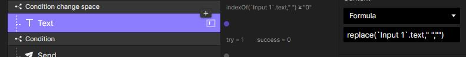

Этап 1. Придумать, как будет выглядеть база данных
До Жени никто не использовал в ProtoPie что-то похожее на базы данных, а для игры должна быть база слов, из которых она загадывает одно. В основу легла база данных со списком слов. У каждого слова свой id, чтобы можно было выбрать случайное слово.Вот как выглядит база формата idWord
Например, берется число 28 и ищется его позицию черезindexof(text,”28”). Получается 163-й символ. В базе с этим номером идет «28ВИНИЛ».Этот текст должен стать переменной. Эта БД — очень длинная строка, начинающаяся с символа «1», а заканчивающаяся последней буквой последнего слова. Поэтому можно использовать функции работы со строками: функции right и left «обрежут» строку с двух сторон, и таким образом слово достанется из базыСправа база обрезается функцией right. С помощью функции indexOf выясняется, что номер нужного слова находится на 163-м символе. Надо убрать эти 163 символа и еще 2 символа номера 28 («28ВИНИЛ»). Номер может быть и однозначный, и двух-трех-четырехзначный, поэтому функцией length нужно определить количество символов в этом числе. В примере нужно убрать 165 символов и оставить значение длины всей базы минус это число.Код выглядит следующим образом: (`riddle_bd`.text,(length(`riddle_bd`.text) - (length(rnd_num)) - (indexOf(`riddle_bd`.text,rnd_num))))
Справа база обрезается функцией left. Слово состоит из 5 букв, так что от получившейся строки отрезается 5 символов слева с помощью функции left. Эти оставшиеся 5 символов и есть рандомное слово «ВИНИЛ». Дополнительно: с помощью функцией replace слово удаляется из базы, чтобы оно не повторялось в следующих играх. А еще должна быть проверка, чтобы рандом повторился, если выдаст число, которого нет в базе.
Этап 2. Продумать игровой процесс
На этом этапе Женя прописывал, как нужно запрограммировать процесс отгадывания. Допустим, игра загадала слово «ВИРУС». Пользователь вводит свое слово, а в ответ должен увидеть, какие буквы встали на свое место (они будут окрашены в зеленый цвет), какие просто есть в загаданном слове (это будут желтые буквы), а каких нет вообще (окрасятся в серый). Также нужна будет проверка, есть ли слово в базе.
Например, игрок ввел слово «РЕБУС». На своих местах оказались буквы «У» и «С». А «Р» находится в другом месте. Чтобы программа тоже это увидела, нужно провести пять проверок — для каждой буквы введенного слова.
Самый простой способ — для каждой буквы сделать свое поле ввода, чтобы было удобно с ней работать. Но игрок должен считать, что это одно поле.
Так должен работать алгоритм поиска совпадений:
Первая буква — «Р», ищем ее в слове «ВИРУС». Буква есть, стоит на 3-й позиции, но в введенном слове «РЕБУС» она первая, значит, буква «Р» должна окраситься в желтый цвет.
Вторая буква — «Е», ищем ее в слове «ВИРУС». Буквы нет — она окрашивается в серый.
С третьей буквой — «Б» — ситуация аналогичная.
Четвертая буква — «У», ищем ее в слове «ВИРУС». Буква есть, и тоже стоит на 4-й позиции. Окрашивается в зеленый цвет.
Пятая буква буква — «С». Есть в загаданном слове, стоит на той же позиции — окрашивается в зеленый.
Далее просим игрока ввести второе слово. Он вводит, например, «ПАРУС» и должен увидеть, что буквы «РУС» на своих местах.Наконец, игрок вводит слово «ВИРУС» — видит, что все буквы на своих местах. Значит, слово разгадано.
Этап 3. Создать игру
Шаг 1. Подготовка базы данных в гугл-таблице. Во второй столбик Женя перенес список слов из интернета и оставил по 20 слов на каждую букву, чтобы было не очень много слов для теста. Получилось 279 слов. Первый столбик сначала был пустой, в нем должны быть id слов, но прежде нужно проделать манипуляции со словами.Поиск букв регистрозависимый, поэтому Женя сделал все слова большими буквами с помощью функции гугл-таблицы UPPER().Перемешал слова: добавил в третью колонку случайное число RAND() и отсортировал табличку по возрастанию этих случайных чисел.Теперь первую колонку можно пронумеровать от 1 до 279.Далее нужно получить формат idWord, чтобы перенести базу в ProtoPie. Женя скопировал первые два столбика в «Блокнот» и функцией «Заменить» заменил табуляцию между числом и словом на пустоту.
Шаг 2. Создание в ProtoPie текстового слоя bd, куда нужно вставить получившуюся базу данных. Для случайного числа нужно создать числовую переменную rnd_num, для случайного слова — текстовую переменную rnd_word и еще переменную lang, чтобы в будущем сделать игру на разных языках.
Шаг 3. Создание промежуточной версии прототипа, которая просто загадывает слово. Процесс занял пять шагов. На слой добавляется текст-кнопка, вешается триггер Tap и переменной rnd_num присваивается случайное целое число от 1 до 279, так как тестовая база данных содержит 279 слов: Assign rnd_num randomInt(1,279).Детектится изменение переменной rnd_num и сразу вашается проверка на будущее: если число не найдено: Condition indexOf(`bd`.text,rnd_num) =-1, тогда повторить предыдущее действие: Assign rnd_num randomInt(1,279).Функция indexOf(`bd`.text,rnd_num) показывает номер символа, после которого идет искомое число.Если же число найдено в базе данных: Condition indexOf(`bd`.text,rnd_num) ≥ 0, то в переменную rnd_word записывается случайное слово тем способом, который описан в начале статьи:
Берутся все символы базы данных, кроме тех, которые находятся до искомого числа. То есть, используя функцию right, обрезается начало базы данных: right(`bd`.text,(length(`bd`.text)-(indexOf(`bd`.text,rnd_num))).
Вычитается длина самого рандомного числа, чтобы у нас было только слово без айдишника, поэтому в формулу добавляется еще (length(rnd_num)). Получается: right(`bd`.text,(length(`bd`.text)-(length(rnd_num))-(indexOf(`bd`.text,rnd_num)))).
Эта функция отрезает только левую часть базы данных. Остается отрезать от нее пять символов нашего слова, и оно будет у нас: left((right(`bd`.text,(length(`bd`.text)-(length(rnd_num))-(indexOf(`bd`.text,rnd_num))))),5).
Промежуточная версия прототипа
Шаг 4. Создание игрового поля. Первое. Клавиатура будет всегда открыта, поэтому сразу под нее отделяется часть экрана — это 294 px для iPhone X.Второе. По правилам оригинальной игры у игрока есть шесть попыток угадать слово, поэтому нужно сделать шесть текстовых полей для предыдущих попыток и одно активное для текущей попытки. Эти поля должны выглядеть одинаково, примерно вот так:
Третье. Слово разбивается на буквы, чтобы потом подсветить правильные буквы зеленым и те, которые на других местах, — желтым.Сначала Женя решил разбить слово по буквам, используя функции left и right:
Для первой буквы — просто left(word,1).
Для второй буквы берется та же одна буква слева, но уже от четырех букв: left((right(word,4)),1).
Для третьей, четвертой буквы все происходит соответственно: left((right(word,3)),1) и left((right(word,2)),1).
Для пятой буквы достаточно right(word,1).
Но введенное слово не всегда состоит из пяти букв. Пользователь вводит слово «ВИРУС» по буквам. Ввел «ВИ» — получилось слово из двух букв, следовательно при использовании функции выше первая буква («В») найдется верно, вторая («И») тоже, но так как в слове нет третьей, четвертой и пятой букв, то все функции будут выводить вторую букву вместо третьей, четвертой и пятой. Вот как эта проблема
выглядит в прототипе.
Женя решил сделать из пяти полей компонент, в который будет отправлять вводимое слово. В компоненте вводимый текст разбивается на буквы для проверки длины текста. Получается шесть проверок: когда нет символов и когда один, два, три, четыре или пять символов.Здесь же Женя добавил анимацию для ввода букв и подсветку текущей буквы. Проверку на совпадения оставил на потом: для начала надо проверить, как работает ввод слов.Четвертое. На главной сцене Женя продублировал пять раз компонент и построил «игровое поле»:
Добавляется переменная try, которая будет отслеживать количество попыток пользователя. В начале игры она равна 1. Когда игрок ввел первое слово, равна 2 и так далее.
Добавляется триггер Return (нажатие Enter на клавиатуре, подтверждение ввода) и проверяется, есть ли введенное слово в БД, с помощью функции indexOf(bd.text,Input 1.text). Если значение формулы −1, значит такого слова нет в словаре — выводим сообщение об ошибке.
Если indexOf(bd.text,Input 1.text) больше 0, значит слово есть в словаре и всё в порядке. Заодно здесь идет проверка, что слово состоит из пяти символов. Значение переменной try изменяется на следующую попытку.
Добавляется переменная success и проверяется. Как только пользователь угадает слово, она станет 1.
При try=7 происходит jump на страницу Game Over.
Для каждого значения переменной try выбирается свой компонент для попытки.
На этом шаге прототип выглядит так .В прототипе можно вводить слова, которые есть в базе данных, попробовать поиграть и потратить все попытки
Шаг 5. Добавление проверок, которые улучшают UX. В первой проверке Женя с помощью функции replace убрал букву «Ё», так как в его базе данных нет слов на букву «Ё», и там, где она должна быть, используется буква «Е».

Вторая проверка — для пробела: это большая кнопка, которую случайно можно нажать. Женя ее отключил, используя ту же функцию replace и меняя пробел (» «) на ничего (»«). Аналогичное можно проделать с цифрами, но Женя ограничился этими проверками.
Шаг 6. Добавление проверки букв
Если введенное слово равно загаданному слову — победа! Для этого просто сравниваются две переменные.
Затем происходит проверка на правильность расположения букв, чтобы отметить их зеленым цветом.
Затем проверка на наличие буквы в слове, чтобы отметить желтым. Для этого берется первая буква загаданного слова с помощью формулы, которой слово разбивалось на буквы выше: left(word,1). Если буква совпадает, она красится в зеленый, если нет — переходим к следующей.
Так происходит с каждой буквой по пять раз: первая буква загаданного слова сверяется с каждой буквой введенного слова.
Если же обе проверки не принесли результата, буква остается серой.
Этап 4. Протестировать игру и довести до ума
Женя добавил функцию «Посмотреть значение слова». Для этого добавил триггер Longtap, в нем — действие Link. В параметре действия — ссылка на викисловарь с переменной-словом.Пофиксил баг с проверкой букв.
Баг в третьем и пятом слове. Вначале слова проверяется буква «А» и подсвечивается желтым, потому что она не на верном месте. Следом проверяется последняя «А». Она на своем месте, и поэтому она зеленая. Пользователь думает, что в слове две буквы «А», но это всего лишь баг.Что сделал Женя: после закрашивания буквы зеленым стал заменять проверенную букву на цифру 0. Таким образом, при второй проверке, когда происходит закрашивание желтых клеток, система ее уже не проверяет.Добавил анимацию при неправильном вводе слова в компоненте и в целом привел дизайн игры в порядок.
Итоги и планы на будущее
Поиграть можно по этой ссылке .Получилось круто и с большим потенциалом для развития. К выходу статьи Женя даже реализовал большую часть задуманных фич. Что добавилось:
Расширилась база слов и добавилось переключение языка: 6000 русских слов и 13000 английских слов.
Появилась локальная статистика игр. Можно увидеть, с какого раза вы угадываете слово.
И еще несколько фич сейчас в разработке.Попробовали поиграть? Скидывайте в комментариях вашу статистику и пишите, что вы бы изменили в процессе создания!